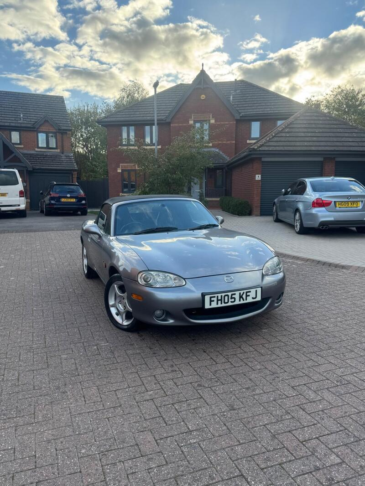
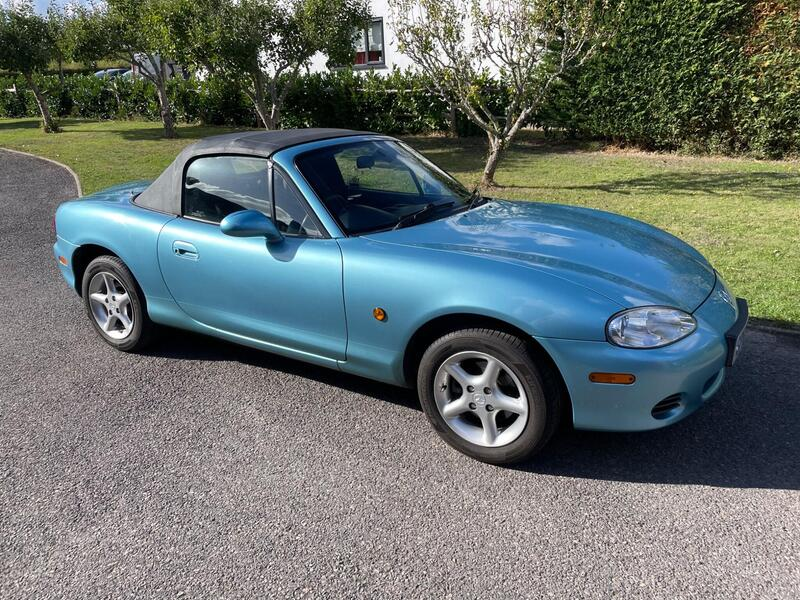
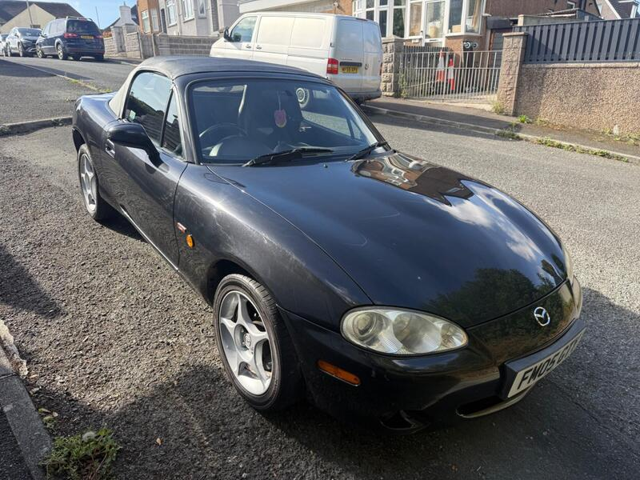
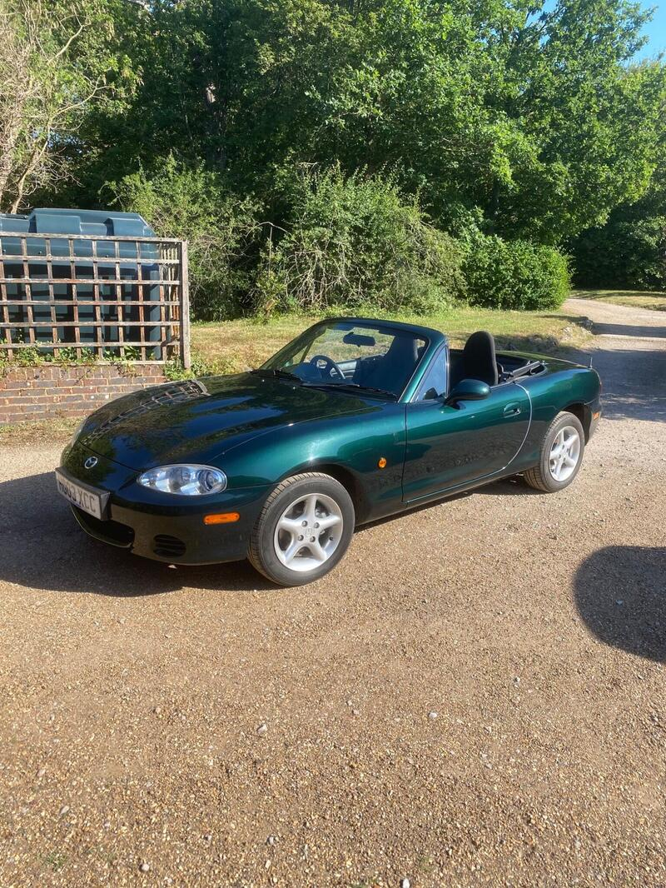
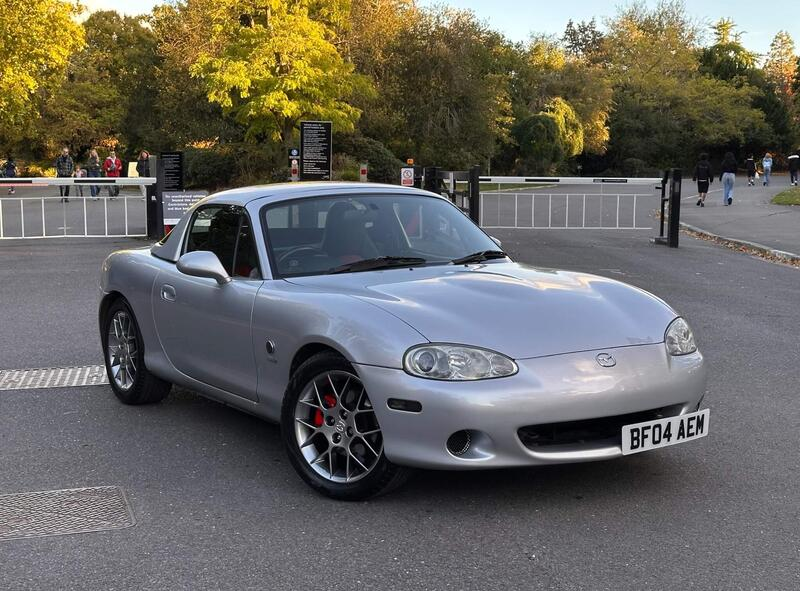
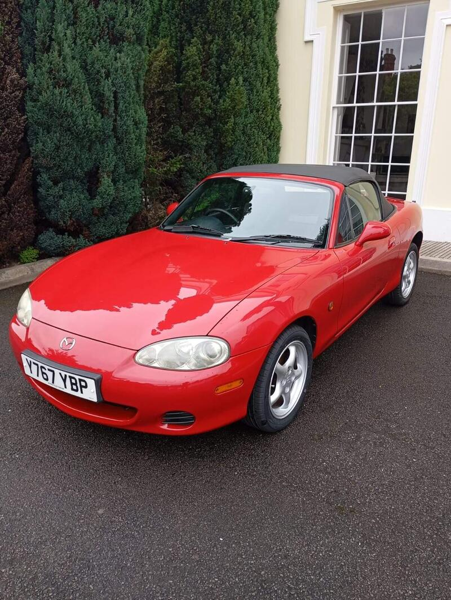
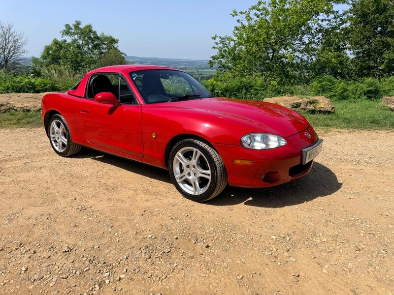
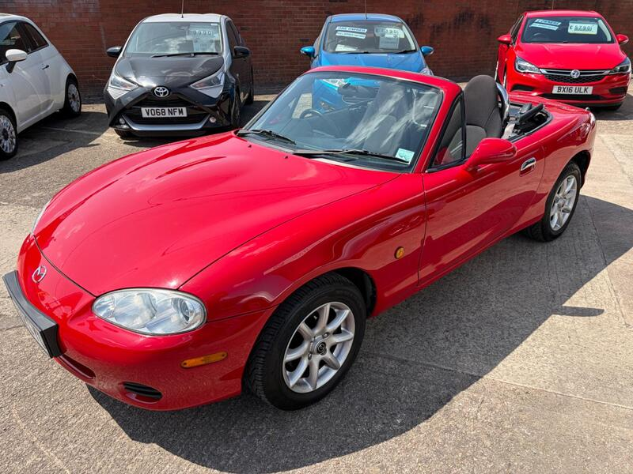
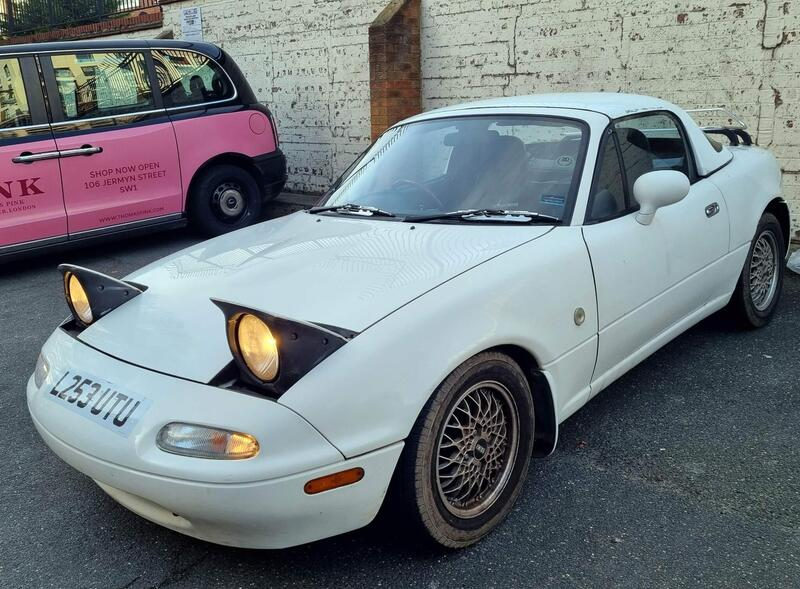

#1✓ Checked 12 Oct£3,500
#1✓ Checked 12 Oct£3,500
2004 · Blue · Arctic
2004 MX-5 1.8 Arctic
Our best value: a nearby, documented limited edition at £3,500.
- Miles
- 59,197
- From Poole
- ~35 mi
- Engine
- 1.8
◉ Salisbury · Private seller
There are no live Nevadas right now, so here's every facelift NB we found. The 18 AutoTrader ads were checked live on 12 Oct 2026, with seller photos. The 10 eBay ads come from search results only. Ranking: price, plus a penalty for miles and distance from Poole, with credit for full history, a limited edition and the 1.8. It's a rough guide, not gospel.
“A clean, documented 1.8 within an hour of Poole beats a cheaper car three counties away.”
#1✓ Checked 12 Oct£3,500
Our best value: a nearby, documented limited edition at £3,500.
◉ Salisbury · Private seller
 #2✓ Checked 12 Oct£3,500
#2✓ Checked 12 Oct£3,500
Good value with a hardtop thrown in. Book a Red Funnel crossing.
◉ Cowes · Private seller

#3✓ Checked 12 Oct£3,500Lots of fresh parts for £3,500. A decent buy.
◉ Swindon · Private seller
 #4✓ Checked 12 OctMay be pre-facelift£4,450
#4✓ Checked 12 OctMay be pre-facelift£4,450
Lovely and low-mileage, but it may not be a facelift car.
◉ Shoreham-by-Sea · Private seller
 #5✓ Checked 12 Oct£3,400
#5✓ Checked 12 Oct£3,400
A lot of car for £3,400 if the bodywork is sound.
◉ Maida Vale · Private seller
 #6✓ Checked 12 Oct£1,995
#6✓ Checked 12 Oct£1,995
A budget way in. Inspect the sills hard.
◉ Buckingham · Private seller
Unverified: open the ad to judge it.
◉ Location on ad · eBay

#8✓ Checked 12 Oct£3,500Rare one-owner history. Strong value at £3,500.
◉ Horsham · Private seller
 #9✓ Checked 12 Oct£2,500
#9✓ Checked 12 Oct£2,500
A high-miler that's been cared for. The price reflects the miles.
◉ Torquay · Private seller

#10✓ Checked 12 Oct£4,250A solid low-mileage Icon. Fair money.
◉ Plymouth · Private seller
Unverified: open the ad to judge it.
◉ Location on ad · eBay

#12✓ Checked 12 Oct£4,950A collector-grade original. Worth the premium if it's as described.
◉ Edenbridge · Private seller
 #13✓ Checked 12 Oct£5,500
#13✓ Checked 12 Oct£5,500
Nicely specced, but £5,500 is top money.
◉ Marlborough · Private seller
 #14✓ Checked 12 Oct£3,330
#14✓ Checked 12 Oct£3,330
Fair money for a trade car with the cambelt done.
◉ Camberley · Trade

#15✓ Checked 12 Oct£5,500A low-mileage Euphonic, but £5,500 is a lot without full history.
◉ Dulwich · Private seller

#16✓ Checked 12 Oct£4,000Long unsold. Make an offer.
◉ Newton Abbot · Private seller

#17✓ Checked 12 Oct£5,495Good history, but priced at the top.
◉ Yeovil · Private seller

#18✓ Checked 12 Oct£5,500Tidy, but expensive.
◉ Cheltenham · Trade
Unverified: open the ad to judge it.
◉ Location on ad · eBay
Unverified: open the ad to judge it.
◉ Location on ad · eBay
Unverified: open the ad to judge it.
◉ Location on ad · eBay
Unverified: open the ad to judge it.
◉ Location on ad · eBay
 #23✓ Checked 12 Oct£6,950
#23✓ Checked 12 Oct£6,950
Dealer premium. Only if you want a warranty-style purchase.
◉ Basingstoke · Trade
Unverified: open the ad to judge it.
◉ Location on ad · eBay
Unverified: open the ad to judge it.
◉ Location on ad · eBay
Unverified: open the ad to judge it.
◉ Location on ad · eBay
Unverified: open the ad to judge it.
◉ Location on ad · eBay

#28✓ Checked 12 OctNot an NB (Mk1)£2,500Not an NB-FL. Leave it out.
◉ Bloomsbury · Private seller
The Nevada was a UK-only special edition of the facelifted NB (the Mk2.5), built in February and March 2003. Mazda made 2,050, in Cerion Silver with a blue hood and interior or Strato Blue with grey. New prices were £15,995 for the 1.6, £16,495 for the 1.8 and £16,995 for the 1.8 with leather.
The spec adds a two-tone leather steering wheel and gear knob, an aluminium-look centre console and vent surrounds, chrome door handles, stainless scuff plates, a wind blocker, a colour-matched hood cover, remote central locking, an alarm and a CD player. Sources disagree on the wheels: mx5-mazda.co.uk says 15-inch alloys, while the March 2003 launch report says 16-inch.
Sources: mx5-mazda.co.uk · MX5info · KentOnline, 14 Mar 2003
| Colour | 1.6 | 1.8 cloth | 1.8 leather | Total |
|---|---|---|---|---|
| Cerion Silver | 200 | 370 | 780 | 1,350 |
| Strato Blue | 100 | 190 | 410 | 700 |
| All | 300 | 560 | 1,190 | 2,050 |
Anglia Car Auctions, June 2024, Lot 285: a 2003 Nevada 1.8 with 87,561 miles, five keepers, a stamped service book and MOT certificates back to 2006. Sold with no reserve, price including buyer's premium. See the result ↗
These came from copy sites and a Gumtree ad that has since been removed. None could be confirmed live on 12 Oct. They're kept here for reference.
 Unverified · copy site£2,995 ono
Unverified · copy site£2,995 ono